MAG_ZEROPOINT |
$29.28$ |
SEEING_FWHM |
$1.12$ |
SATURATE |
$49974.00$ |
GAIN |
$45.8366$ |
Además, el filtro de convolución que usaremos sera de gauss_3.0_7x7.conv, con estos parámetros empezaremos a hacer el análisis inicial para obtener un catálogo con el cual modelar la PSF. Como siempre, empezaremos por determinar el BACKGROUND
Usando los parámetros por defecto BACK_SIZE=64 y BACK_FILTERSIZE=3, obtenemos lo siguiente:
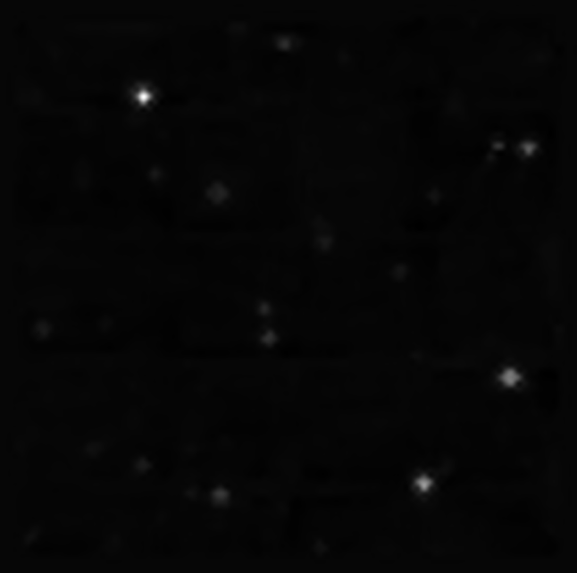
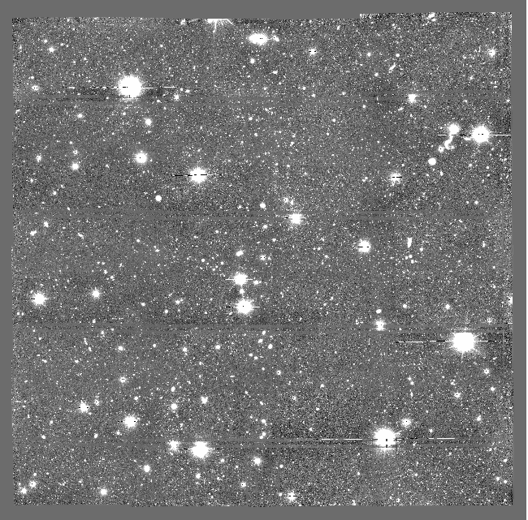
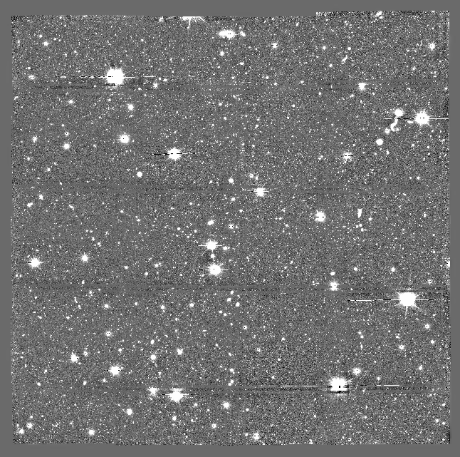
Ahora vamos a determinar el nivel de umbral para la detección de fuentes, para ello emplearemos la imagen con los datos invertidos.
DETECT_THRESH,ANALYSIS_THRESH |
Objetos detectados | Objetos extraidos |
|---|---|---|
| $1.5$ | $6531$ | $4503$ |
| $2.0$ | $1529$ | $1121$ |
| $2.5$ | $645$ | $532$ |
| $3.0$ | $457$ | $400$ |
Podemos notar que para un umbral de $2.5$, los objetos detectados disminuyen drasticamente en comparación con los 6531 con un umbral de $1.5$.
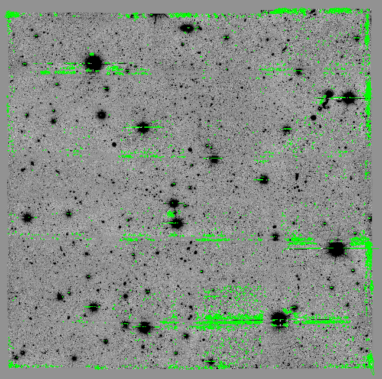
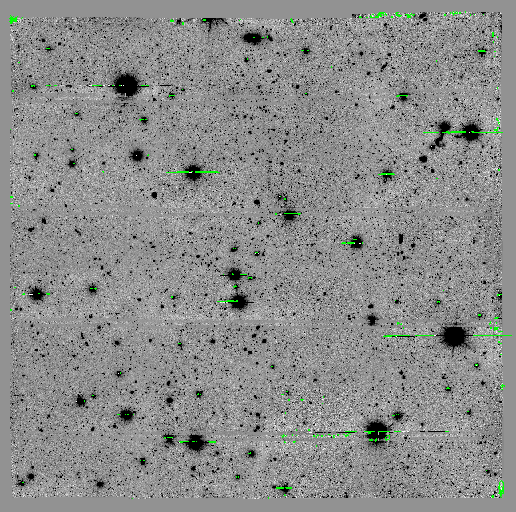
Entonces, usando este nivel de umbral con un mínimo de 5 píxeles juntos para detectar objetos, podemos pasar al proceso de deblending con los parámetros DEBLEND_NTHRESH=32 y DEBLEND_MINCONT con valores de $0.001, 0.005, 0.01, 0.05$.
| Valor | Objetos detectados | Objetos extraidos |
|---|---|---|
| $0.001$ | $23739$ | $20989$ |
| $0.005$ | $23289$ | $20631$ |
| $0.01$ | $23089$ | $20489$ |
| $0.05$ | $22549$ | $19976$ |
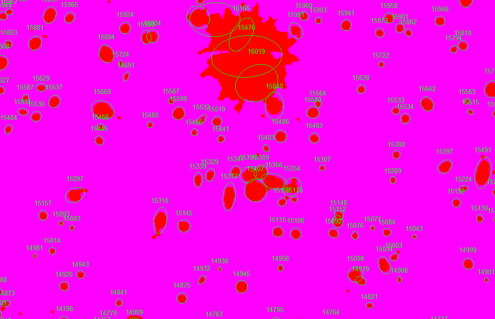
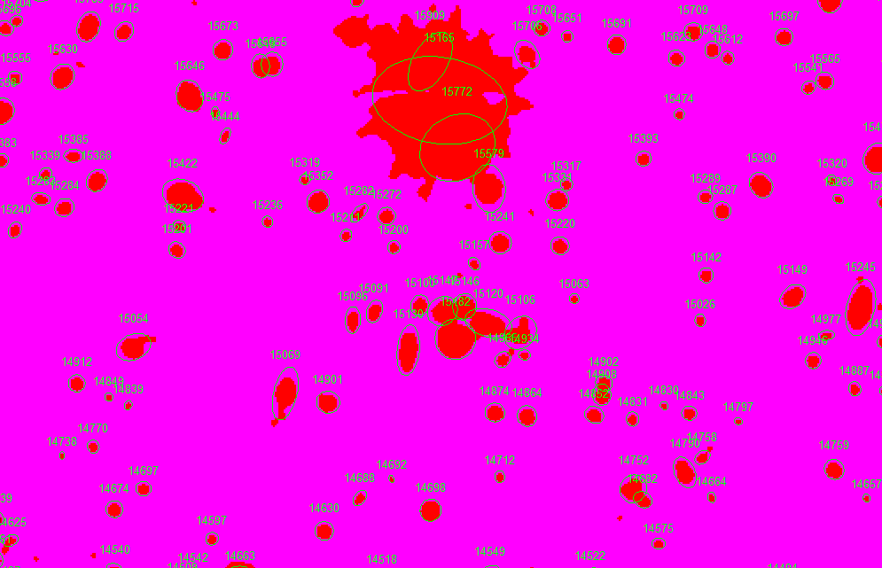
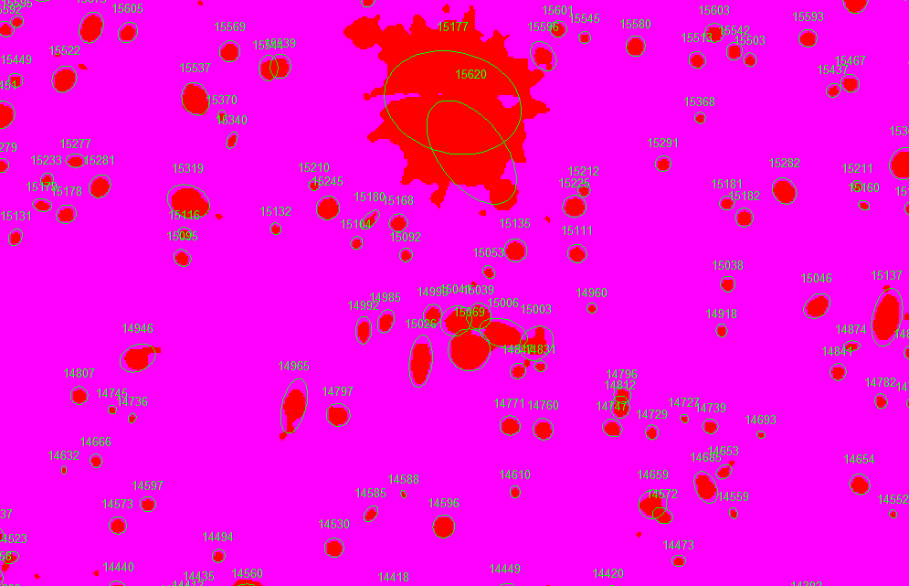
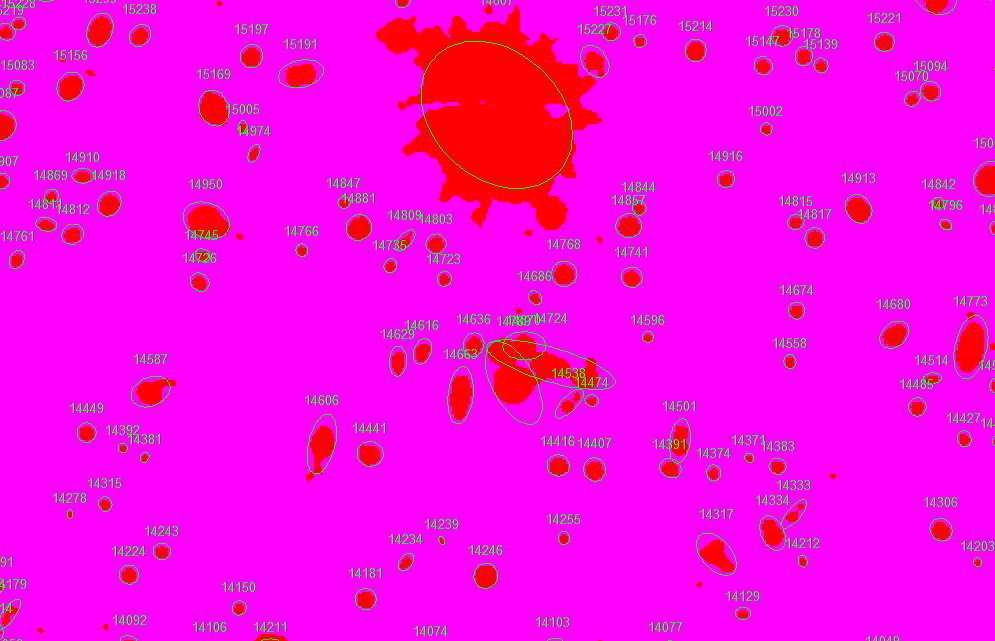
Para nuestro análisis tomamos el valor de $0.005$ con el objetivo de determinar cuantás estrellas detectamos y compararlo con GAIA. Ahora, vamos a buscar un conjunto de "objetos puntuales" clasificados por CLASS_STAR y que esten los mejor aislados de otros objetos, así tomar esta muestra de estrellas e inyectarla a PSFEx y obtener un buen modelo de PSF.
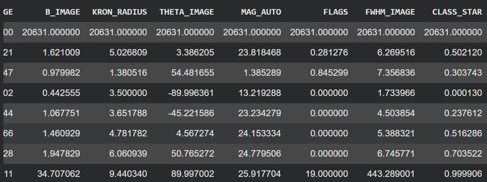
Encontramos que existe un objeto con un calor de FWHM_IMAGE=443, lo cual es un valor enorme, así que filtraremos el catálogo con un FWHM_IMAGE < 10. Con esto pasamos de 20630 objetos a 19348. Ahora, vamos a aplicar el código para obtener nuestras estrellas aisladas, este código hace 3 filtros; el primero con CLASS_STAR, luego con FLAGS y, por último, un filtro de vecino más cercano.
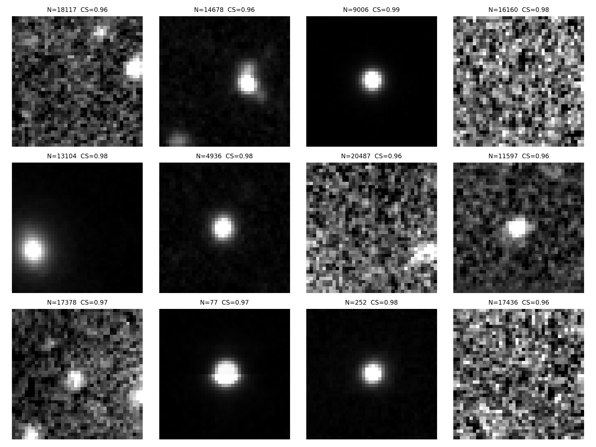